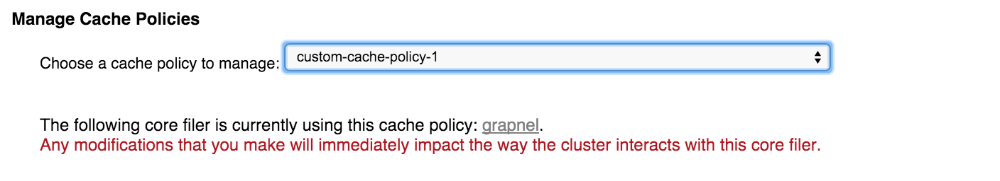
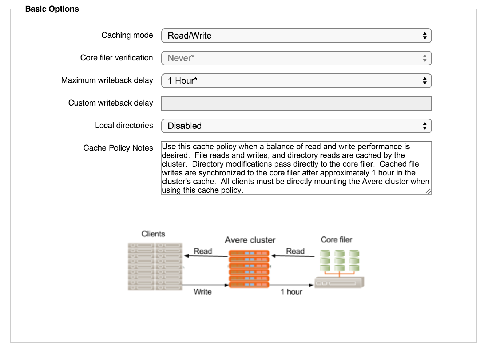
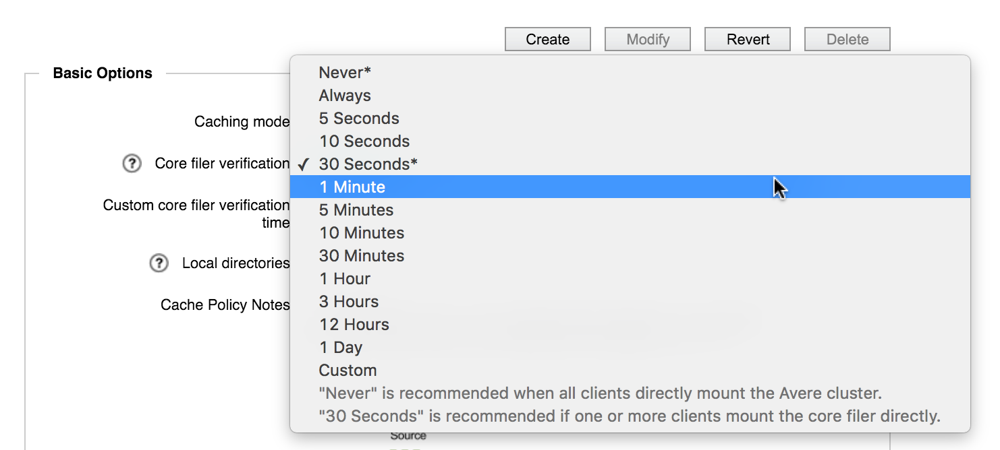
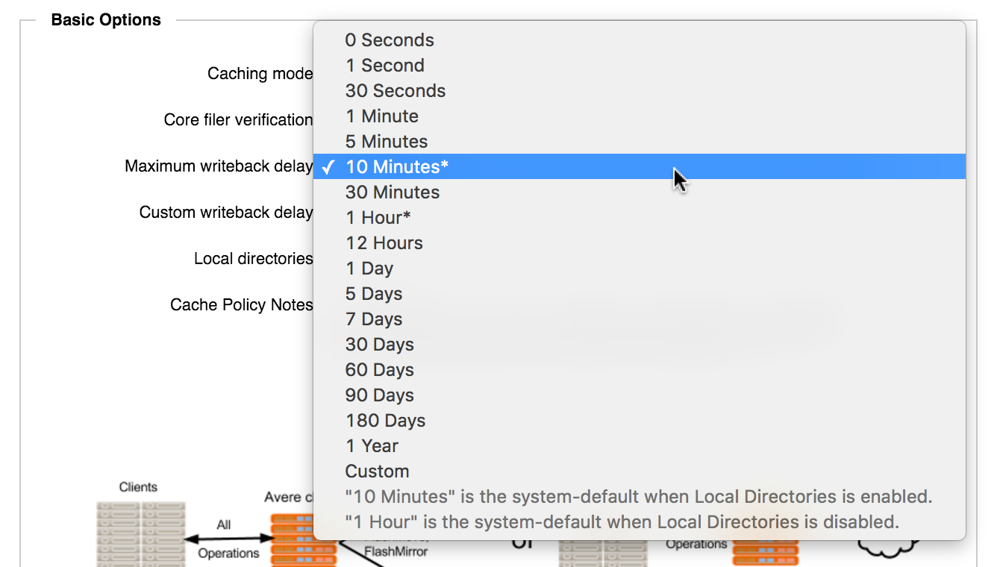
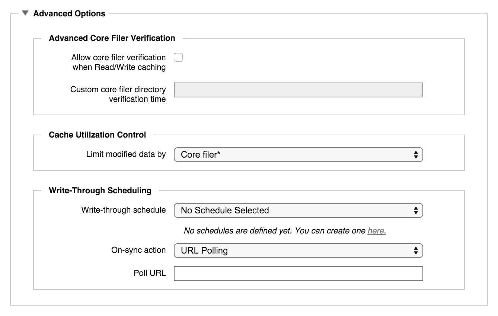

Core Filer > Manage Cache Policies

The Manage Cache Policies settings page allows you to see details for the preconfigured cache policies in the system and to create your own customized policies.
(Use the Core Filer Details settings page to apply a policy to a core filer.)
Cache policies are groups of settings that control how the Avere cluster retains data that has passed between a client and a core filer. Depending on the type of back-end storage and the needs of the system, you can set it to cache files that clients read; files that clients read and files that clients write; or neither. You can configure how frequently to check the cached file against the back-end version, and customize additional details.
Predefined Cache Policies
The system comes with several cache policies already configured - most administrators can find one that is appropriate to their system’s needs.
The table below describes the five default cache policies and their settings; more detailed descriptions follow.
| Cache Policy | Caching Mode | Core Filer Verification | Local Directories | Write Back Delay |
|---|---|---|---|---|
| Clients Bypassing the Cluster | Read | 30 seconds | Disabled | None |
| Read Caching | Read | Never | Disabled | None |
| Read and Write Caching | Read/Write | Never | Disabled | 1 hour |
| Full Caching | Read/Write | Never | Enabled | 10 minutes |
| Transitioning Clients Before or After a Migration | Read | 30 seconds | Enabled | None |
Note
Starting in Avere OS 5.3.3, the default writeback delay for Full Caching is 1 hour instead of 10 minutes. This change does not affect cache policies in clusters upgraded to 5.3.3 or later, but it does affect clusters created with the new software.
Clients Bypassing the Cluster
The policy named Clients Bypassing the Cluster is designed for the use case where some clients mount the Avere cluster but other clients mount the core filer directly.
This policy caches read files only; writes are sent immediately back to the cluster. Client read requests are served from the cache as frequently as possible. A relatively short verification interval is used so that the cached files can be frequently updated from the back-end storage.
Read Caching
The Read Caching policy is designed to optimize client read performance.
Read files are cached, but writes pass directly to the core filer. Files in the cache are never compared against the back-end storage.
This policy can be useful if clients reference the same static data repeatedly.
In this system, clients can write through the cluster or mount the storage system directly to write data. However, because the Core Filer Verification setting in this policy is Never, clients must not modify files directly on the back-end core filer that are also stored in the cache - this scenario can cause data inconsistency.
Read and Write Caching
The Read and Write Caching policy balances read and write performance; it can be used when all clients mount only the Avere cluster and no clients read or write directly on the core filer.
Files in the cache are not validated against the core filer because the cached version is assumed to be more current than the back-end version.
Files are written back to the core filer after one hour.
Full Caching
The Full Caching policy is designed for use with cloud core filers and to be used during FlashMove and FlashMirror data management jobs.
This policy requires clients to mount only the Avere cluster, and not use the core filer directly. Reads and writes are both stored in the cluster, and written back to the core filer after ten minutes.
This policy stores frequently accessed files in the cache to avoid the latency that can be associated with accessing cloud storage, but frequently writes files to more permanent storage on the back end.
Transitioning Clients Before or After a Migration
The client transition caching policy can be used before or after a data migration (FlashMove or FlashMirror) in a system where some clients mount the Avere cluster and other clients mount the core filer directly. Select this policy when moving clients to the Avere cluster before a migration, or moving clients off the cluster after a migration. (You cannot safely migrate files with the Avere cluster if clients are directly connected to the core filer.)
File and directory reads are cached but are checked against the core filer storage every 30 seconds to ensure consistency. Writes are not cached.
Customizing Cache Policies
In addition to the system default cache policies that are predefined, you can create your own custom cache policies.
You cannot edit a system cache policy, but you can use a system policy as the starting point for a custom policy. Make changes, and then click the Create button to save the modified policy with a new name.
You also can use this screen to modify a custom cache policy that you created previously.
After you modify settings, be sure to click the appropriate button. Use the Create button to enter a new, unique name for the policy and save it as a new custom policy. Use the Modify button if you started with a custom cache policy and you want to make changes to that policy. (You cannot modify system policies.)
If you change your mind about making changes, click the Revert button to reload the saved policy that you started with.
To create a new cache policy:
Select a cache policy to use as a starting point.
Use the Choose a cache policy to manage selector to choose a policy.
If you choose a custom policy that is being used by a core filer, a warning message appears telling you that changes will take effect immediately if you click the Modify button after making changes. Clicking the Create button instead allows you to save your changes with a different name to create a new cache policy.
Customize the settings in the Basic Options and Advanced Options panels.
Save your changes as a new policy by clicking the Create button and entering a new name for the policy.
{kind=link}
To modify a custom cache policy, the steps are similar:
Select the custom cache policy in the Choose a cache policy to manage selector.
If a core filer is using the selected policy, a warning message appears.
Customize the settings in the Basic Options and Advanced Options panels.
Click the Modify button to save the updates to your custom cache policy. The changes immediately affect any core filers that use this policy.
Requirements for Cloud Core Filers
When creating a custom cache policy that will be used on a cloud object store, you must include the following settings:
- The caching mode must be Read/Write.
- Local Directories must be enabled.
- Core Filer Verification must be set to Never.
- Write-through scheduling must be disabled (that is, do not create a schedule).
Cache policies that do not meet these requirements cannot be selected for cloud core filers.
Cache Policy Settings - Basic Options
The most frequently used cache policy options can be changed in the Basic Options panel.
{kind=link}
- Caching Mode
Choose Read to cache files (or directory structures) that the clients request from the core filer, or Read/Write to cache both requested files and any changes that the client makes to files or directories.
The caching mode must be Read/Write if you want to use this policy with cloud core filers.
Caution
If you are using read/write mode, all clients that access a given dataset must mount the Avere cluster to access the core filer. If some clients use the cluster and others access the core filer directly, data inconsistency can lead to corruption of the data.
The Core Filer Verification setting determines how much time can pass before the cached file’s attributes are checked against the back-end storage. If write caching is enabled, the verification period is not configurable.
The amount of time a written change can be stored in the Avere cluster’s cache is determined by the Maximum Writeback Delay setting.
- Core Filer Verification
The verification setting determines how long a read file can be stored in the cache before it is compared to the core filer version.
This setting is active only if clients can write directly to the core filer. If the caching mode is set to Read/Write, then client writes can be cached and this setting is disabled. (An advanced option allows you to override this setting; read the warnings below in Advanced Core Filer Verification before taking this action.)
You can select a value from the drop-down menu, or select Custom and enter a value in the field provided. If some clients access the core filer directly and others access the Avere cluster cache, a value greater than 30 seconds can cause consistency problems between cached data and the core filer.

{kind=link}
- Maximum Writeback Delay
The writeback delay value sets the maximum amount of time a changed file can be cached before it is written to the back-end core filer.
This setting is active only for policies with write caching.
Select a value from the drop-down menu, or select Custom and enter a value in the field provided. For systems that use Local Directories, a value of ten minutes or less is recommended; without Local Directories, the maximum recommended value is one hour.
Read Determining the Maximum Writeback Delay Value to learn more about setting an appropriate writeback delay value.

{kind=link}
- Local Directories
The Local Directories feature synchronizes the directory structure on the Avere cluster cache with the core filer. This setting allows directory structure changes to be written to the cluster cache and transferred to the core filer at specific intervals. This capability can significantly boost performance for certain types of workloads that include a high number of creation operations.
This option can be enabled only for cache policies that include write caching.
This option must be enabled if you want to use the policy with cloud core filers.
This option must be enabled if you want to use FlashMove or FlashMirror.
Note that this option is set independently for each core filer. It cannot be configured for an entire vserver or per export.
Note
Enabling and disabling local directories on a core filer can take a large amount of time. You can reduce this time by reducing the writeback delay and waiting for all of the cached data to be written to the core filer before enabling or disabling the Local Directories setting.
- Cache Policy Notes
- Use this field to store a description or other administrative notes about the cache policy. This text will be visible when the cache policy is selected. Entering notes is optional.
Cache Policy Settings - Advanced Options
Click the triangular control under Advanced Options to show additional settings for your custom cache policy.
{kind=link}
All of the options in the advanced panel apply to Read/Write cache policies only. If the Caching Mode setting of the policy being modified is not Read/Write, these settings are inactive.
- Advanced Core Filer Verification
This setting allows you to override the default behavior and turn on core filer verification for clusters that cache write operations. Note that it is possible to lose client changes stored in the cache if you allow the system to invalidate cached files based on the core filer.
Caution
This setting can lead to data inconsistencies between the cache and the core filer, and possible data loss or corruption. Consult Avere Global Services before using this setting.
To turn on core filer verification for a read/write cache policy, check the Allow core filer verification when read/write caching box and specify a time interval (in seconds) in the field below.
Cloud core filers cannot use cache policies that have core filer verification enabled.
- Cache Utilization Control
Cache utilization controls are designed to limit the amount of modified data cached on the Avere cluster for a particular core filer, user, export, or other entity. If the “dirty” data in the cluster cache reaches a preset percentage for this entity, Avere OS begins writing data more aggressively to the back-end storage system. (“Dirty” data in this case are file changes that have not been written to the back-end core filer.)
If the controlled data in the cache reaches 100% of the limit, any further write operations to the cache from the selected entity will be rejected with
DQUOTorEJUKEBOXerrors. If this problem persists, you can clear the space by changing the maximum writeback delay value for the core filer to 0 seconds (use the Core Filer Details page to change to a cache policy with this setting.) After the system returns to normal, consider redistributing workload among your clients to avoid another occurrence.Use the drop-down tool to select what type of limit to set. Options include Core Filer, User, Export, FSID, Qtree, and combinations of those.
(Qtrees are configured on the VServer > Export Policies page.)
- Write-Through Scheduling
This scheduling setting lets you ensure that all cached changes are written to the back-end core filer before a scheduled core filer backup, snapshot, or other data operation. At a scheduled time, the Avere cluster stops caching write operations (it changes to read mode caching) and copies all cached changes to the core filer. New write operations are passed through immediately to the core filer. (This feature can be referred to as scheduling “read-mode” or “write-through” periods, which are two different names for the same behavior.)
Read Synchronizing Cached Data with Scheduled Write-Through/Read Mode Periods to learn more about this feature.
Cloud core filers cannot use policies that include write-through scheduling.
To configure scheduled write-through periods, make the following changes:
In the Write-through Schedule selector, choose one of the schedules that you have previously created in the system. If none exist, click the link to create a new schedule.
Note
Schedules can be viewed and edited on the Schedules page in the Cluster settings section.
Use the On-Sync Action selector to specify how to end the write-back period. Options are:
- URL Polling - Contact a web address (specified in the next field) for a message that the sync is complete.
- Wait Period - Stay in read mode for a set amount of time, then return to normal operation.
The third setting has a different form depending on the setting chosen in On-Sync Action:
- If URL Polling is selected, there is a Poll URL text field. Specify the URL to monitor for a message to return to write caching.
- If Wait Period is selected, there is a drop-down selector labeled Wait Period. Choose one of the available values, which range from five minutes to six hours.
Saving Cache Policies
A row of buttons to save or abandon changes appears at the top and bottom of the cache policy settings page.
After you modify settings, be sure to click the appropriate button. Use the Create button to enter a new, unique name for the policy and save it as a new custom policy. Use the Modify button if you started with a custom cache policy and you want to make changes to that policy. (You cannot modify system policies.)
If you change your mind about making changes, click the Revert button to reload the saved policy that you started with.